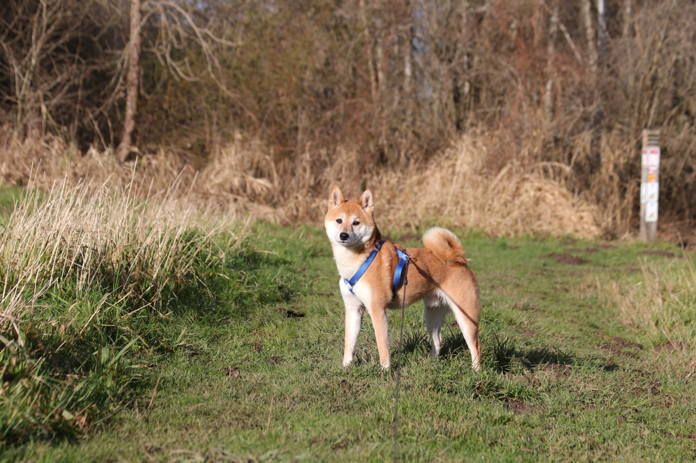
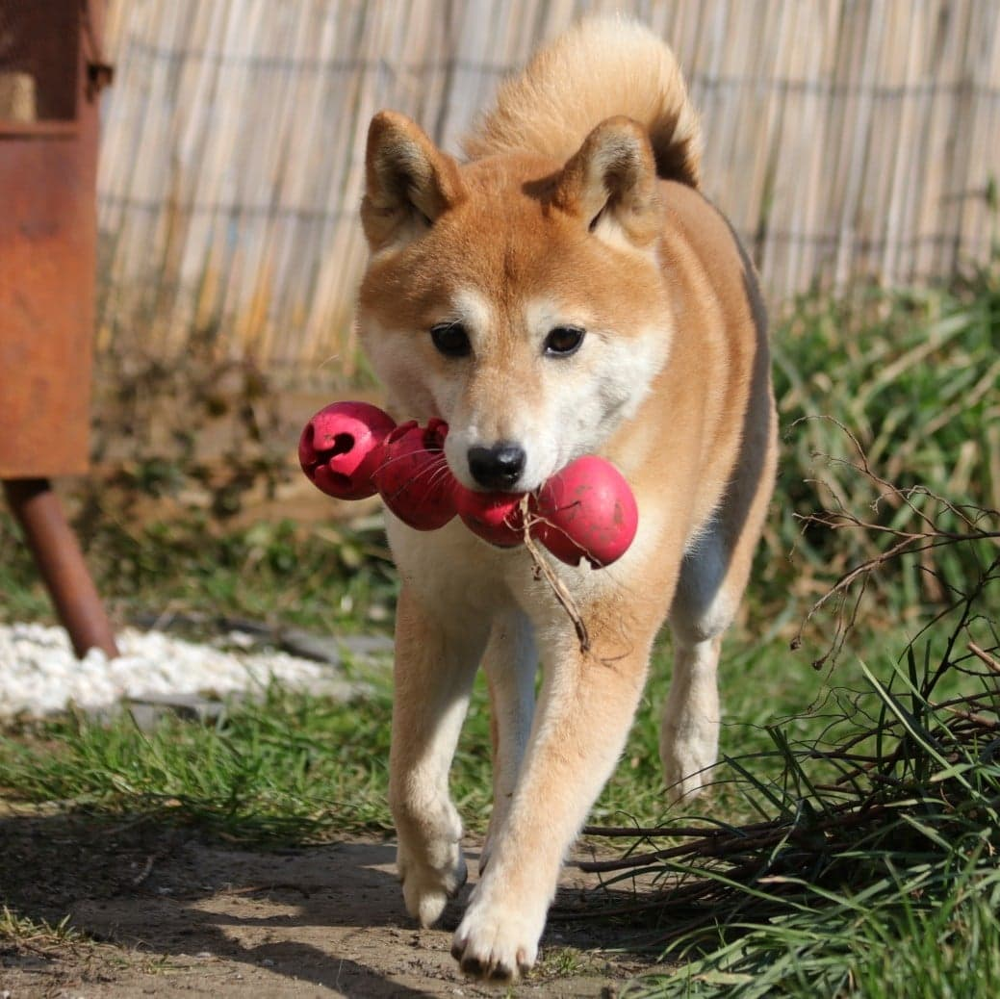

Flinn is een slimme Shiba kerel van 12 december 2016
Hij is momenteel in opvang waar men de tijd neemt om aan enkele punten te werken.
Pas wanneer Flinn er klaar voor is kan een verhuis, in samenspraak en onder begeleiding, doorgaan.
Momenteel heeft Flinn een diepgewortelde verlatingsangst doordat dit lang is blijven aanslepen.
Hieruit volgen ook enkele gedragingen die dwangmatig zijn en chronische stress.
Flinn is reactief naar andere honden op wandeling.
Gelukkig valt hier allemaal aan te werken met geduld en juiste aanpak.
Verder kunnen we weinig slecht zeggen over de schat.
Flinn is wat wantrouwig bij bepaalde handelingen.
Maar als je dit rustig doet en hem aangeeft dat hij veilig is, lukken ze met gemak en leert hij jou vertrouwen.
Hij heeft al veel geleerd in de tijd hier, maar valt ook snel terug bij foute aanpak.
Flinn zal het beste getijen bij een familie waar er vaak, tot altijd iemand thuis is.
Of waar er geregeld kan worden dat iemand op Flinn past als de mensen even van huis gaan.
Ergens met een goed afgesloten tuin is een must.
Een evenwichtig hond is mogelijk bespreekbaar.
Geen katten
Kinderen 13+
Flinn geniet van snuffelwandelingen en is gek op mensen.
Hoe meer aaitjes en knuffels, hoe beter voor het ventje.
Flinn speelt geweldig graag met de bal maar verliest zichzelf hierin.
Spelen mag, maar moet zeker gevarieerd en met mate.
Al bij al blijft Flinn in onze ogen een gouden hond voor de Shiba liefhebber.
Denk jij die liefhebber te zijn? Mail ons dan via:
shibarescuevzw@gmail.com

|